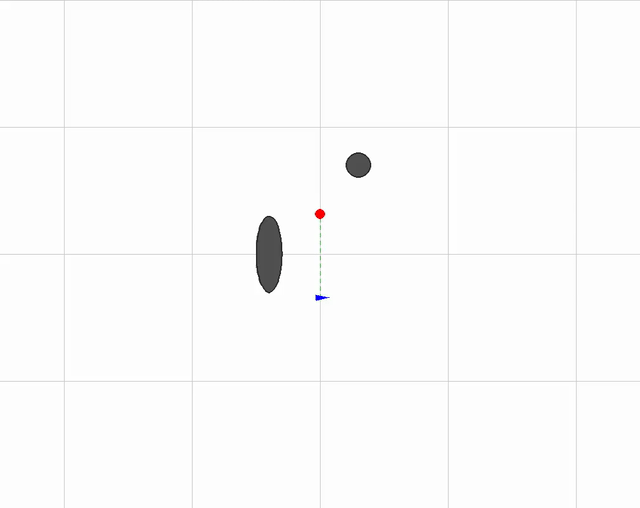
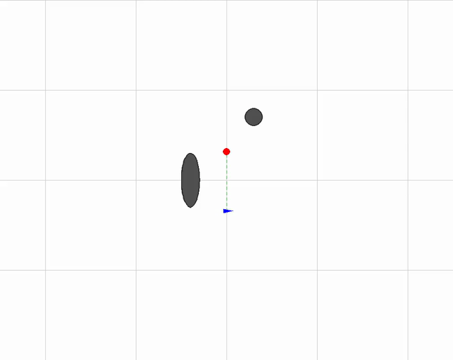
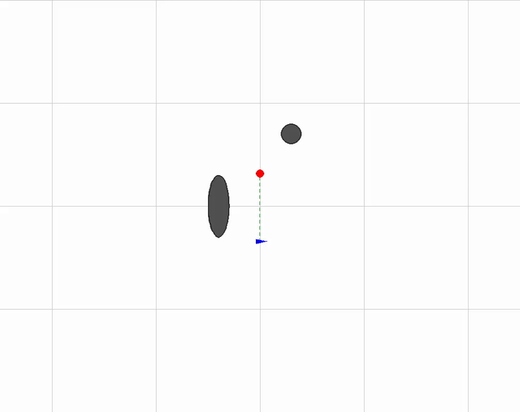

Occlusion-Aware Drone Tracking
Model predictive control and target trajectory prediction in 2D
AAE 568 · Team project
Hyunchang Kweon (Thomas), Chen-Yu Chang, and Gabriel Oliveira
Read the full report (PDF) View code on GitHub
The problem
Following a moving target requires more than staying close. When the target passes behind an obstacle, a drone can lose its line of sight even while remaining on a collision-free path. This project explores how a controller can balance visibility, tracking distance, obstacle avoidance, and control effort.
We studied this problem in a two-dimensional simulation with circular and elliptical obstacles. The drone maintains a fixed altitude, and the target follows a scripted path. The team compared an online SLSQP-based model predictive controller, an LQR-based controller, and an offline optimal-control benchmark based on Pontryagin’s Maximum Principle (PMP).
My contribution
As documented in the report’s individual contributions section (Section VI, page 12), I was responsible for:
- Dynamics formulation: modeled the planar quadcopter and reduced its position dynamics to a double integrator using virtual acceleration inputs.
- Simulation environment: built the base PyGame environment for testing obstacle layouts, target trajectories, and interchangeable controllers, with recording and logging support.
- Occlusion-aware SLSQP-MPC: developed the controller formulation and explored three target trajectory predictors.
- Evaluation: wrote the scripts for calculating metrics and comparing visibility, tracking performance, acceleration cost, and controller computation time.
Controller design
At each update, the controller predicts the target’s motion and optimizes a sequence of planar acceleration commands. It applies the first command, receives a new observation, and repeats the optimization.
The objective combines control effort, deviation from the desired tracking distance, and an occlusion penalty. Circular and elliptical obstacles are mapped into normalized coordinates so the controller can measure how closely the drone-to-target line of sight passes to an obstacle. An exponential penalty discourages configurations with poor visibility.
The optimization also imposes obstacle collision constraints, a minimum target separation throughout the horizon, a maximum target distance at the terminal step, and acceleration limits. Analytical cost gradients and constraint Jacobians are mapped from predicted positions to acceleration inputs for the SLSQP solver.
Three target predictors
The controller is evaluated with three ways of predicting the same target’s future motion. The attractive-field model changes the prediction, while the simulated target follows the scripted trajectory.
Constant velocity
Estimates velocity from consecutive position measurements and extrapolates it across the prediction horizon.

Velocity and acceleration
Estimates both velocity and acceleration, with exponential moving averages to smooth the measurements.

Attractive field
Adds an obstacle-attracted motion heuristic to anticipate a target that moves around obstacles to increase occlusion.

The blue marker is the drone, the red marker is the target, and the connecting line indicates their line of sight.
Results
Trajectories and time histories


Select either plot to view it at full resolution.
Predictor comparison
The following values are reported in Table I, page 7 of the final report. Visibility values are scores, rather than percentages; the acceleration cost is the report’s squared-acceleration metric.
| Metric | Constant velocity | Velocity + acceleration | Attractive field |
|---|---|---|---|
| Average visibility score | 2.131 | 2.223 | 2.079 |
| Minimum visibility score | 0.160 | 0.148 | 0.243 |
| Average computation time (ms) | 4.602 | 10.114 | 9.888 |
| Maximum computation time (ms) | 20.573 | 138.687 | 87.815 |
| Acceleration cost (m²/s⁴) | 11.450 | 16.075 | 14.362 |
Constant velocity produced the smoothest response and the lowest acceleration cost. Velocity and acceleration achieved the highest average visibility score, alongside a rougher trajectory and larger computation-time spikes. Attractive field achieved the highest minimum visibility score, suggesting that anticipating obstacle-seeking target motion can improve the worst visibility encountered in this scenario.
These results use fixed controller weights in a scripted 2D scenario. They demonstrate a tradeoff between prediction complexity, visibility, and smoothness; broader weight tuning and more varied target behaviors are needed to establish how well the findings generalize.
Team comparisons
Chen-Yu Chang developed the LQR-based controller, including constraint and penalty terms. The report describes improvements in path consistency and visibility recovery through side-bias guidance and line-of-sight recovery logic.
Gabriel Oliveira developed the offline PMP benchmark, which uses the complete target trajectory before simulation. It provides a full-information reference for the online methods. In the reported comparison, it maintained tracking distance and line of sight but incurred a higher acceleration cost than the online MPC cases.
What I would explore next
A broader ablation of controller weights and predictor settings would help separate the effects of prediction from those of cost tuning. Other extensions identified in the report include richer models of evasive target motion and a higher-fidelity quadcopter model beyond the fixed-altitude 2D approximation.
Report and credits
Optimal Control Strategies for 2D Occlusion Aware Dynamic Tracking — Chen-Yu Chang, Gabriel Oliveira, and Hyunchang Kweon.
The report is the source for the contribution breakdown, controller descriptions, and numerical results on this page. The animations and comparison figures accompany the SLSQP-MPC predictor study.
Read the full report (PDF) · View code on GitHub · Back to projects